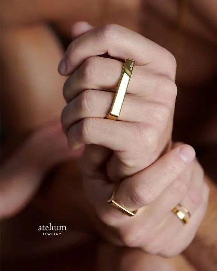
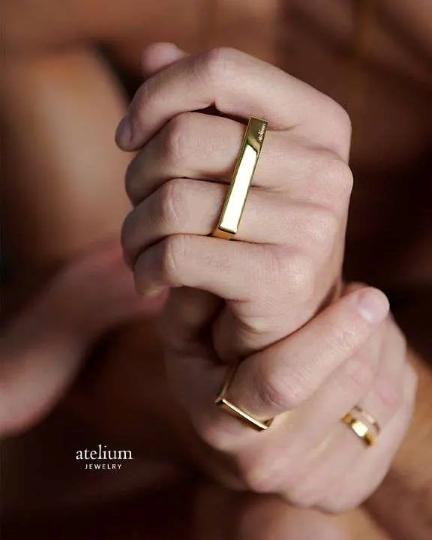
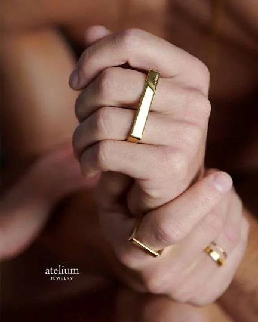

.png)


.png)


 



I am a marketing and web development professional with extensive experience leading digital strategy, brand
development, SEO, and performance-focused campaigns for global organizations. With dual Bachelor of Business
Adminstration degrees in Marketing and Management, from the University of Houston, I bring over a decade of expertise spanning paid media, email marketing, CRM administration, social media management, web
analytics, and creative production.
I also specialize in technical SEO, on-page optimization, site
architecture enhancements, graphic design, and content creation.
Currently serving as the Director of Web Development and SEO for an international e-commerce company, I manage a high-volume website with thousands of products and daily visitors. I have extensive knowledge of CMS platforms such as Shopify, Shopify Plus, WordPress, Wix, and more. In addition to my marketing skills, I am proficient in front-end web development technologies including HTML, CSS, JavaScript, and Liquid.
Visit the Marketing
Metrics page to see analytics and data from my marketing initiatives, campaigns, and designs.

.jpg)